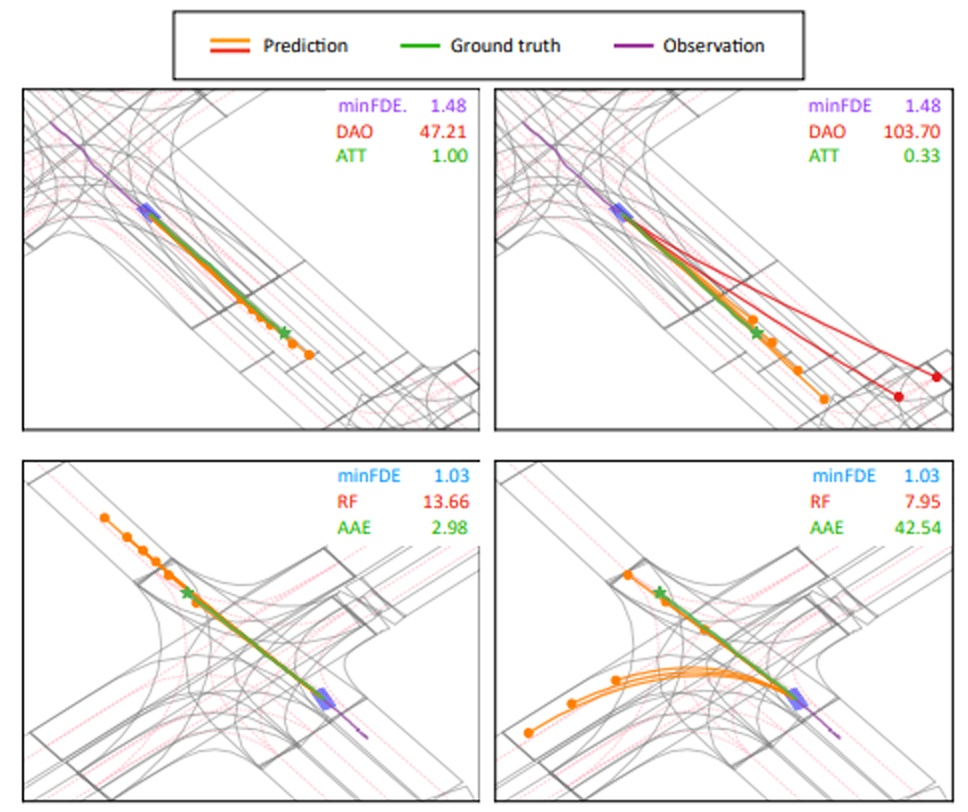
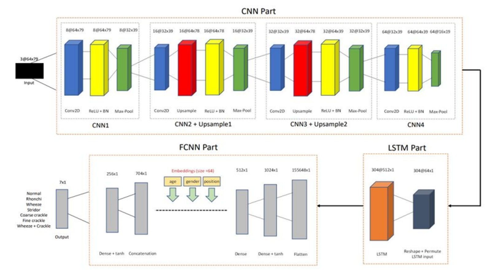

Publications


MS in Robotics | University of Michigan
University of Michigan, Ann Arbor | MS in Robotics (Aug 2024 - Present)
University of Toronto | BASc in Electrical and Computer Engineering (2019 - 2024)
Developed a data generation pipeline in Evogym for evaluating robotic structures.
Utilized large language models (LLMs) to optimize robotic structures through AI insights.
Enhanced robotic simulation workflows by combining AI-driven evaluations with structured data generation for improved design and performance analysis.
Designed a robot task-learning system integrating multi-modal VLMs for improved task execution.
Implemented instruction-based semantic segmentation to enhance robot perception.
Led a team to develop an RL algorithm optimizing circuit parameters using Cadence and TSMC 65nm PDK.
Used RGCN and DDPG to encode circuit topology and optimize design cycles by 80%.
Multi-Agents RL Simulation Platform “SMARTS”
Autonomous Driving Trajectory Prediction Models
Designed radar-based autonomous vehicle systems; 1st place in SAE Autodrive Challenge II.
Developed an ML-based respiratory sound classification model, reaching 75% accuracy.
Built a C++ navigation app using OpenStreetMap API with a responsive UI.
Programming: Python (PyTorch, TensorFlow), C/C++, MATLAB, Java, Verilog, ARM Assembly
Software Tools: ROS1/2, RL (DDPG, RGCN), SMARTS Simulation, Deep Graph Library
Email: changhec@umich.edu
GitHub: github.com/AisenGinn